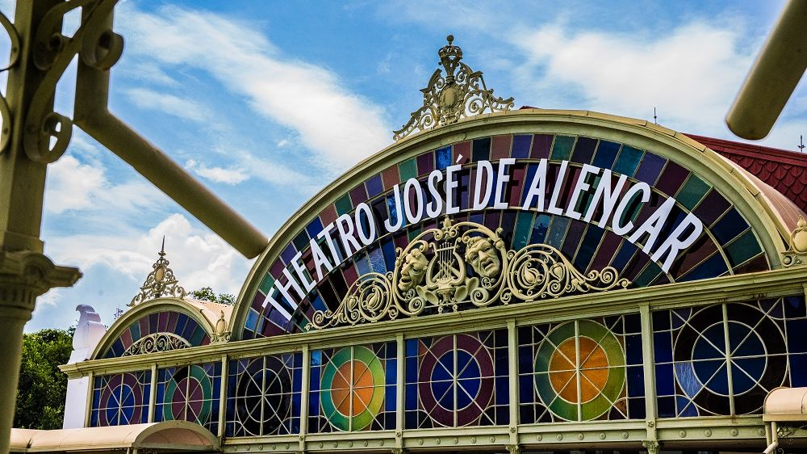

Fortaleza, cujo o lema é Fortidudine (Força, valor e coragem), é uma terra cheia de histórias para contar e de sorrisos a serem distribuídos.
O objetivo desta página é apresentar as minhas dicas de pontos interessantes da cidade de Fortaleza, como:
Esperamos que o conteúdo do website te auxilie em uma futura viagem para a Terra da Luz.
Divirta-se!
Enquete: O que você gostaria de conhecer em Fortaleza?
Praias
Museus
Restaurantes
Outros